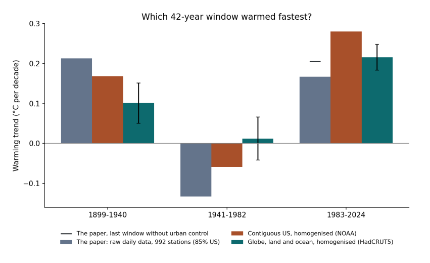
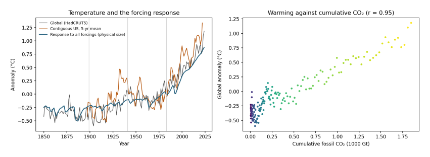
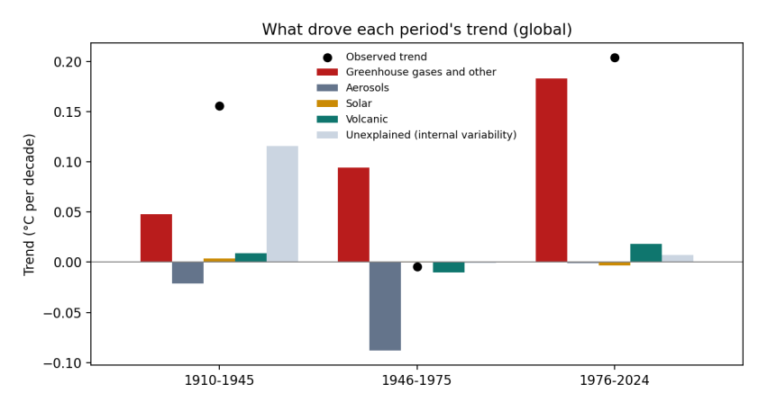

1. A Thursday in Coleraine¶
On Thursday 5 November 2026 I was at the sixth Northern Ireland High-Performance Computing User Conference, held in the Diamond Hall at Ulster University’s Coleraine campus. It is a friendly, practical meeting. Researchers from Ulster and Queen’s University Belfast who use the shared supercomputer, Kelvin2, come together to show what they have been running on it, swap tips about job queues and storage, and meet the people who keep the machines going. I was there to give a ninety-second lightning talk about my own PhD work: running the UK government’s new Home Energy Model thousands of times on Kelvin2, to estimate what the next generation of Energy Performance Certificates might say about homes in London and Belfast.
The programme was a fair picture of where research computing sits in 2026. The first keynote came from the managing director of a company that builds data centres. The closing keynote, from an engineering manager at a data-storage manufacturer, was titled Powering the AI Era: The Future of Data and Advanced Manufacturing. In between came talks on machine learning, drug design, vaccine candidates, solvents from seaweed, health inequalities, and the ethics of artificial intelligence. A great deal of the day, in other words, was about building more computing capacity, which is an industry with its own large and growing demand for electricity.
In the same block of lightning talks as mine was a talk titled Revisiting CO₂ emissions and global warming: Implications for society. It presented a working paper, posted on SSRN (Bhatta 2026), which analyses more than 70 million daily temperature readings from long-running weather stations and concludes that anthropogenic CO₂ is not the primary driver of global warming, and that current climate policy should be reassessed.
I want to be careful about how I respond. The author, Bibek Bhatta, is a researcher at Queen’s University Belfast. He has done a lot of work with a large public dataset and has been open about his method, which is what makes it possible to check. This essay is not an attack on him. It is an attempt to do what scientists are supposed to do with any surprising claim: take the data seriously, rerun the analysis, see where the results differ, and explain why. Along the way I want to explain, as plainly as I can, how climate data work, because the mistakes in this case are ones that anyone can make if they come to the climate system from outside it.
References¶
Bhatta, Bibek. 2026. “Revisiting CO\(_2\) Emissions and Global Warming: Implications for Society.” SSRN Working Paper 5395197, ahead of print. https://doi.org/10.2139/ssrn.5395197.
2. Who agrees, and about what¶
Before we look at any temperatures, it helps to be clear about what the scientific consensus on climate change actually says, and how it has been measured.
The consensus is that the Earth is warming and that human activity, chiefly burning coal, oil and gas, is the main cause. It has been measured in two ways. The first way is to read the scientific literature. In 2021, Mark Lynas and colleagues (Lynas et al. 2021) took a random sample of 3,000 papers from the 88,125 climate-related studies published between 2012 and 2020, read their abstracts, and found that more than 99% of those taking a position accepted that humans are causing the warming. The second way is to ask the scientists directly. In 2009, Peter Doran and Maggie Kendall Zimmerman surveyed (Doran and Zimmerman 2009) more than 3,000 Earth scientists, and their results are especially useful here because they broke the answers down by field.

Figure 2.1. Share of scientists, or of scientific papers, accepting that human activity is a significant cause of warming, by group. Sources: Lynas et al. (2021) for papers; Doran and Zimmerman (2009) for the four survey groups.
How to read Figure 2.1. Each bar is one group. The length of the bar, read against the scale along the bottom, is the percentage in that group who agree that human activity is a significant cause of warming. The top two bars, in orange, are the people and papers closest to the subject: the climate literature itself, and scientists who actively publish research on climate. Agreement there is 97% to 99%. The grey bar is all the Earth scientists in the 2009 survey taken together, including geologists, geophysicists and others who do not study climate: 82%. The two teal bars at the bottom are the groups with the lowest agreement. Meteorologists, at 64%, are mostly weather forecasters: they are expert at predicting the atmosphere a few days ahead, which is a different problem from understanding how the climate changes over decades. Economic geologists, at 47%, are the geologists who find and assess deposits of oil, gas, coal and minerals; many of them worked in those industries.
The pattern is the point. Agreement rises steadily with expertise in climate itself, and it is lowest in the fields that are furthest from climate research or closest to fossil-fuel extraction. A separate study by William Anderegg and colleagues (Anderegg et al. 2010) in 2010 looked at 1,372 climate researchers and found the same thing from another direction: the small minority unconvinced by human-caused warming had, on average, far fewer publications on climate and far fewer citations than the majority.
None of this means that someone from another field cannot ask a good question about climate. Economists, statisticians and engineers have contributed a great deal to climate science. But it does mean that when a surprising result comes from outside the field, the first thing to check is whether it has taken account of what the field already knows.
2.1 What about capitalism?¶
The scientific consensus is about humans and fossil fuels. No survey has asked climate scientists whether capitalism caused climate change, and I will not pretend that one has. But the question of who burned the fuel, and why, is not hidden either. In 2014 the researcher Richard Heede (Heede 2014) traced the carbon dioxide and methane emitted by industry between 1751 and 2010 back to the companies and state producers that extracted the coal, oil and gas. He found that 90 entities, most of them still operating, accounted for about 63% of the total. The historian Andreas Malm has argued, in Fossil Capital (Malm 2016), that steam engines spread through British cotton mills in the early nineteenth century not because coal was cheaper than water power, which it often was not, but because steam let mill owners build where workers were plentiful and run the machines on their own schedule. Whether one accepts Malm’s argument or not, the history of fossil fuels is a history of particular decisions by particular owners, made for profit. The thermometer tells us that the world is warming. The ledger tells us who gained from warming it.
References¶
Anderegg, William R. L., James W. Prall, Jacob Harold, and Stephen H. Schneider. 2010. “Expert Credibility in Climate Change.” Proceedings of the National Academy of Sciences 107 (27): 12107–9. https://doi.org/10.1073/pnas.1003187107.
Doran, Peter T., and Maggie Kendall Zimmerman. 2009. “Examining the Scientific Consensus on Climate Change.” Eos, Transactions American Geophysical Union 90 (3): 22–23. https://doi.org/10.1029/2009EO030002.
Heede, Richard. 2014. “Tracing Anthropogenic Carbon Dioxide and Methane Emissions to Fossil Fuel and Cement Producers, 1854–2010.” Climatic Change 122: 229–41. https://doi.org/10.1007/s10584-013-0986-y.
Lynas, Mark, Benjamin Z. Houlton, and Simon Perry. 2021. “Greater than 99% Consensus on Human Caused Climate Change in the Peer-Reviewed Scientific Literature.” Environmental Research Letters 16 (11): 114005. https://doi.org/10.1088/1748-9326/ac2966.
Malm, Andreas. 2016. Fossil Capital: The Rise of Steam Power and the Roots of Global Warming. Verso.
3. What the paper did¶
The paper’s method is straightforward to describe. It downloads the Global Historical Climatology Network Daily dataset (GHCN-Daily), which NOAA maintains (Menne et al. 2012) and which holds daily maximum and minimum temperatures from tens of thousands of weather stations. It keeps only stations whose records start in 1900 or earlier and continue to at least 2020, so that the same stations are followed through time. It computes each day’s average temperature as the mean of the maximum and minimum. It then fits a straight-line trend to the daily temperatures inside blocks of years, called windows, using a regression with a separate baseline for each station and each calendar month, so that differences between places and seasons do not get mixed up with change over time. Finally, it compares each window’s trend with the amount of CO₂ emitted worldwide in that window.
Its main results, for all 992 stations in its sample, are in its Table 10. Converted from degrees per year to degrees per decade, which is the more usual unit:
Window |
Paper’s trend (°C per decade) |
CO₂ emitted in the window (billion tonnes) |
|---|---|---|
Window |
Paper’s trend (°C per decade) |
CO₂ emitted in the window (billion tonnes) |
–1940 |
+0.213 |
|
–1982 |
−0.133 |
|
–2024 |
+0.167 (with urban control); +0.205 (without) |
,209 |
Read across the rows, the paper’s argument is easy to follow. The first window warmed fastest while relatively little CO₂ was emitted. The second window cooled even though emissions more than tripled. The third window warmed, but more slowly than the first, despite emissions eight times larger. If CO₂ drove warming, the paper reasons, more emissions should mean faster warming, and they did not.
It is a clear argument, and if the numbers in the table were a fair picture of the world, it would deserve attention. So the first thing to check is the numbers.
References¶
Menne, Matthew J., Imke Durre, Russell S. Vose, Byron E. Gleason, and Tamara G. Houston. 2012. “An Overview of the Global Historical Climatology Network-Daily Database.” Journal of Atmospheric and Oceanic Technology 29 (7): 897–910. https://doi.org/10.1175/JTECH-D-11-00103.1.
4. The same question, asked of better data¶
I repeated the comparison using records that climate scientists have built specifically to measure change over time:
-
HadCRUT5 (Morice et al. 2021), from the Met Office Hadley Centre and the University of East Anglia, combines land weather stations with sea-surface temperatures measured by ships and buoys. It covers the whole globe, weights each region by its area, corrects known errors in the records, and supplies an uncertainty range for every year.
-
NOAA’s contiguous-US temperature series (NOAA National Centers for Environmental Information 2026) is the official record for the 48 neighbouring US states, also corrected for known errors. I included it because, as we will see, most of the paper’s stations are in the United States.
-
Our World in Data (Our World in Data 2026) provides yearly and accumulated CO₂ emissions.
-
Indicators of Global Climate Change (Forster et al. 2024), an annual update following the methods of the IPCC’s Sixth Assessment Report, provides radiative forcing (explained below) for each cause of climate change from 1750 to 2024.
All four are free to download, and the code I used is short enough to follow line by line. Here is what they say about the paper’s three windows.

Figure 4.1. Warming trend in each of the paper’s 42-year windows. Grey: the paper’s own results (Table 10), from raw daily data at 992 stations, 85% in the United States; the black dash is its last window without the urban control. Orange: NOAA’s corrected contiguous-US record. Teal: HadCRUT5, the corrected global land and ocean record, with error bars showing the 95% uncertainty of the trend, allowing for the fact that neighbouring years are similar.
How to read Figure 4.1. The three groups along the bottom are the three windows. Within each group, each bar is one dataset, and its height, read on the left-hand scale, is how fast that dataset warmed in that window, in degrees Celsius per decade. Bars above the zero line show warming and bars below it show cooling. The thin black lines on the teal bars show how uncertain each global trend is: if two bars’ ranges overlap a lot, the difference between them could be chance.
The story the figure tells is the reverse of the paper’s. In the corrected global record, the most recent window, 1983–2024, warmed at 0.22 °C per decade, more than twice as fast as 1899–1940 at 0.10 °C per decade, and the uncertainty ranges do not overlap. The middle window did not cool globally; it was close to flat. Even in the corrected record for the United States alone, which is where most of the paper’s stations are, the most recent window warmed fastest: 0.28 °C per decade against 0.17.
Window |
Paper (raw daily, 992 stations) |
Contiguous US (NOAA, corrected) |
Globe (HadCRUT5, corrected) |
|---|---|---|---|
Window |
Paper (raw daily, 992 stations) |
Contiguous US (NOAA, corrected) |
Globe (HadCRUT5, corrected) |
–1940 |
+0.213 |
+0.168 |
+0.101 ± 0.05 |
–1982 |
−0.133 |
−0.059 |
+0.012 ± 0.05 |
–2024 |
+0.167 |
+0.280 |
+0.216 ± 0.03 |
So the paper’s central observation, that warming was fastest in the early twentieth century, does not survive a change of dataset. The interesting question is why, and the answer has five parts. Each one is something that climate science learned, often the hard way, over the past hundred years.
References¶
Forster, Piers M. et al. 2024. “Indicators of Global Climate Change 2023: Annual Update of Key Indicators of the State of the Climate System and Human Influence.” Earth System Science Data 16: 2625–58. https://doi.org/10.5194/essd-16-2625-2024.
Morice, Colin P. et al. 2021. “An Updated Assessment of near-Surface Temperature Change from 1850: The HadCRUT5 Data Set.” Journal of Geophysical Research: Atmospheres 126 (3): e2019JD032361. https://doi.org/10.1029/2019JD032361.
NOAA National Centers for Environmental Information. 2026. Climate at a Glance: National Time Series, Contiguous US Average Temperature. Https://www.ncei.noaa.gov/access/monitoring/climate-at-a-glance/.
Our World in Data. 2026. CO\(_2\) and Greenhouse Gas Emissions Dataset. Https://github.com/owid/co2-data.
5. Five things the climate system teaches¶
5.1 Temperature follows the CO₂ that has built up, not this year’s emissions¶
When we burn fuel, the carbon dioxide does not vanish at the end of the year. A large part of it stays in the atmosphere for centuries, trapping a little more heat every year it is there. The warming effect at any moment therefore depends on how much CO₂ has accumulated in the air, not on how much was released in the most recent few decades. This is why climate scientists speak of a carbon budget: a total number of tonnes that can be emitted, ever, before a given level of warming is reached.

Figure 5.1. Left: CO₂ emitted each year, 1850–2024, the quantity the paper compared with warming. The shaded bands are the paper’s three windows. Right: each dot is one year, placed by the total CO₂ emitted from 1750 up to that year (across) and that year’s global temperature anomaly (up), coloured from purple (1850) to yellow (2024). The red line is the best straight-line fit. Data: Our World in Data; HadCRUT5.
How to read Figure 5.1. The left panel shows why the paper’s comparison looks so striking: yearly emissions were low before 1940 and then rose steeply. But the right panel is the comparison physics actually predicts. As accumulated CO₂ grows from left to right, temperature rises along an almost straight line, with a correlation of 0.95. The scatter around the line is real, and it comes from the other influences explained below, but the overall relationship is close and steady. Comparing a window’s warming rate with the emissions released during that window is a different test, and not one that any climate model or theory proposes.
5.2 There was a second hand on the dial¶
Burning coal and oil does not only release CO₂. It also releases sulfur dioxide, which forms tiny droplets of sulfate in the air. These droplets reflect sunlight back to space and help clouds reflect more, so they cool the surface. After the Second World War, industrial output rose fast, much of it without filters, and sulfate pollution rose with it. From the 1970s, clean-air laws in Europe and North America cut it back.
Climate scientists measure the effect of each of these influences as radiative forcing: the change in energy flowing into the climate system, in watts per square metre of the Earth’s surface. Greenhouse gases have a positive forcing (they warm); sulfate pollution has a negative forcing (it cools). Over the paper’s middle window, 1941–1982, the total human forcing rose by about 0.5 watts per square metre, but the aerosol part fell by about 0.7, offsetting much of the greenhouse warming. The paper’s attempt to account for aerosols used satellite measurements that only begin in 1980, after the period in question, so it could not capture this.
5.3 The stations were not the world¶
The paper calls its results global, but its sample is not. Using NOAA’s station inventory, I rebuilt the paper’s selection rule: stations recording both daily maximum and minimum temperature from 1900 or earlier until 2020 or later.

Figure 5.2. Every GHCN-Daily station that records daily maximum and minimum temperature from 1900 or earlier to 2020 or later: 1,155 stations in 30 countries. Orange: United States (992, or 86%). Teal: everywhere else (163). The paper’s final sample, after removing stations with too many missing days, was 992 stations in 29 countries, 840 of them (85%) in the United States. Data: NOAA GHCN-Daily station inventory.
How to read Figure 5.2. Each dot is a weather station. The map shows what the paper’s sample covers and, just as importantly, what it leaves out: almost nothing in Africa, South America, South Asia or the Middle East, and nothing at all over the oceans, which cover 71% of the planet. The contiguous United States is about 1.6% of the Earth’s surface. A trend computed from these stations, with each station counted equally, is mostly a trend for the eastern and central United States.
That matters for the early-century result, because the United States had an exceptionally hot 1930s, the decade of the Dust Bowl. You can see it in the orange line of Figure 6.1 below: a sharp bump in the 1930s that the global record does not share to anything like the same extent.
5.4 Old thermometers need correcting¶
Over a hundred and twenty years, almost every weather station changes. It moves to a new site, gets a new kind of thermometer or shelter, finds a town growing up around it, or changes the time of day at which it is read. In the United States, many volunteer observers switched from reading their thermometers in the late afternoon to reading them in the morning, mostly after 1950. Because of how daily maximum and minimum thermometers work, that switch makes later decades look cooler than they really were. Climate scientists documented this “time of observation bias” in the 1980s and correct for it (Karl et al. 1986), along with station moves and instrument changes, in a process called homogenisation. The paper used the raw daily readings, without these corrections, which is a likely reason its middle window shows cooling of −0.13 °C per decade where the corrected US record shows −0.06.
The paper’s summary table also contains values that suggest something went wrong in cleaning the raw data. It reports a 25th percentile of daily minimum temperature of −72.8 °C, which is lower than the minimum it reports (−64.65 °C), and a highest daily minimum of only 13 °C, which is implausibly low for a sample dominated by US summers. These are worth checking before any trend is interpreted.
5.5 Seventy million rows are not seventy million facts¶
Today’s temperature is a lot like yesterday’s, and one town’s is a lot like the next town’s. Treating every day at every station as a separate, independent piece of evidence makes any result look extremely certain, which is why the paper reports p-values of 0.0000 throughout. When the similarity of neighbouring years is allowed for, a 42-year global record contains roughly 15 to 30 independent years of information, not millions, and the honest uncertainty is the width of the error bars in Figure 4.1.
References¶
Karl, Thomas R., Claude N. Williams, Pamela J. Young, and Wayne M. Wendland. 1986. “A Model to Estimate the Time of Observation Bias Associated with Monthly Mean Maximum, Minimum and Mean Temperatures for the United States.” Journal of Climate and Applied Meteorology 25 (2): 145–60. https://doi.org/10.1175/1520-0450(1986)025\<0145:AMTETT>2.0.CO;2.
6. Putting the causes together¶
If temperature responds to the total forcing from all causes, we should be able to reproduce the temperature record from the forcing alone. Climate scientists do this with full climate models, but a simple version takes a few lines of code. Imagine the climate as two connected reservoirs of heat. The first, the land, air and upper ocean, responds within a few years. The second, the deep ocean, takes centuries. Each year, each reservoir keeps most of last year’s warmth and moves a little towards the level the current forcing would eventually produce. I used standard values for how fast each reservoir responds and how strongly, and fed in each cause’s forcing at its published size, without adjusting anything to fit.

Figure 6.1. Left: global temperature (grey, HadCRUT5), the contiguous United States (orange, five-year average, NOAA) and the temperature produced by the simple two-reservoir model from all forcings at their published size (blue). Vertical lines mark the paper’s windows. Right: the same as Figure 5.1, warming against accumulated fossil CO₂.
How to read Figure 6.1. In the left panel, the blue line is the model and the grey line is what was measured. The model has no knowledge of the measured temperatures except their average level, yet it follows the long rise, the dips after large volcanic eruptions, the flat middle of the century, and the steep climb since the 1970s. It accounts for 87% of the year-to-year variation in global temperature since 1850. The orange US line shows how much more a single region swings about, including the 1930s peak.
The same model lets us split each period’s warming into its causes.

Figure 6.2. The global warming trend in three periods (black dots) and how much of it came from each cause (bars), in °C per decade. Red: greenhouse gases and other human influences; grey: sulfate and other aerosols; yellow: the Sun; green: volcanoes; pale blue: the part the forcing does not explain, which includes natural swings in the oceans and measurement errors.
How to read Figure 6.2. Each group of bars is a period. The height of each bar is how much that cause contributed to the period’s trend: bars above zero warmed, bars below zero cooled. The bars in a group add up to the black dot, which is the observed trend.
Period |
Observed |
Greenhouse gases and other |
Aerosols |
Sun |
Volcanoes |
Unexplained |
|---|---|---|---|---|---|---|
Period |
Observed |
Greenhouse gases and other |
Aerosols |
Sun |
Volcanoes |
Unexplained |
–1945 |
+0.16 |
+0.05 |
−0.02 |
+0.01 |
+0.12 |
|
–1975 |
+0.09 |
−0.09 |
−0.01 |
|||
–2024 |
+0.20 |
+0.18 |
+0.02 |
+0.01 |
Three stories come out of this table. Since the mid-1970s, greenhouse gases account for almost all of the warming; nothing else comes close. In the middle of the century, greenhouse warming of about 0.09 °C per decade was cancelled almost exactly by aerosol cooling of the same size, which is why the temperature line went flat. And in the early twentieth century, the forcing explains only about a quarter of the observed warming. The rest is unexplained by the simple model, and is consistent with what earlier research has concluded: part of that warming came from natural swings in ocean circulation, and part of the apparent jump around 1945 comes from a change in how ships measured sea temperature during the Second World War (Thompson et al. 2008).
That last point is worth dwelling on, because it is where the paper’s observation has something real in it. The early-twentieth-century warming was unusually fast for the forcing at the time, and climate scientists have studied it for decades for exactly that reason. One of the papers the study itself cites, by Gabriele Hegerl and colleagues in 2018 (Hegerl et al. 2018), is a review of it. But a period of natural variability early in the record says nothing against the role of CO₂ in the period since, where the forcing explains almost everything.
References¶
Hegerl, Gabriele C., Stefan Brönnimann, Andrew Schurer, and Tim Cowan. 2018. “The Early 20th Century Warming: Anomalies, Causes, and Consequences.” WIREs Climate Change 9: e522. https://doi.org/10.1002/wcc.522.
Thompson, David W. J., John J. Kennedy, John M. Wallace, and Phil D. Jones. 2008. “A Large Discontinuity in the Mid-Twentieth Century in Observed Global-Mean Surface Temperature.” Nature 453: 646–49. https://doi.org/10.1038/nature06982.
7. Why this matters, and what I take from it¶
I said at the start that I did not want to write an attack, and I meant it. Rerunning someone’s analysis, finding that it does not hold, and explaining why, is ordinary science. It is how the consensus in Figure 2.1 was built in the first place: not by people agreeing with each other, but by more than a century of people trying to prove each other wrong and failing. The radiative physics of CO₂ was measured in laboratories in the 1850s. The records were built, found to contain errors, and corrected. The models were tested against ice cores, ocean heat and satellite measurements of the energy leaving the planet. Agreement of 97% to 99% among the people who do that work is what convergence looks like.
What this case teaches, I think, is that the climate is a system, and you need to know its parts before you can read its signals. A competent statistician, coming to it from outside, can easily miss the aerosols, the oceans, the station corrections, and the difference between yearly and accumulated emissions, and end up with a clean-looking chart that points the wrong way. The fix is not to tell people from other fields to stay out. It is to read the field’s literature first, to talk to the people who built the data, and to be most careful precisely when a result overturns what the field has found.
And there is a reason this matters beyond the seminar room. Doubt about climate change has never been evenly spread, and neither has money. The fields with the most doubt in Figure 2.1 are the fields closest to extraction. The companies on Heede’s list spent decades funding public confusion about the science after their own researchers had confirmed the warming. At a conference whose keynotes were about building more data centres to power artificial intelligence, a talk saying that CO₂ is not the main driver of warming will be welcome to some in the room, whatever its author intended. The electricity those data centres need will come from somewhere, and whether it comes from coal and gas or from wind and sun is exactly the kind of decision that a clear understanding of the science should inform.
So read the thermometer carefully, and then read the ledger. The thermometer shows that the world has warmed faster in the past four decades than at any time in the instrumental record, and that the warming tracks the CO₂ we have accumulated. The ledger shows that this is not a story about “humanity” in general, but about a particular way of producing things, one that made burning carbon profitable and kept it profitable long after its cost was known. Systems built by people can be changed by people, and that work starts with getting the science right and explaining it patiently to anyone who is willing to look.